Manhattan the Crossroads of the World.
Manhattan is one of the five boroughs of New York City, the other four being the Bronx, Queens, Brooklyn and Staten Island.
Manhattan is best known for its famous Central Park,
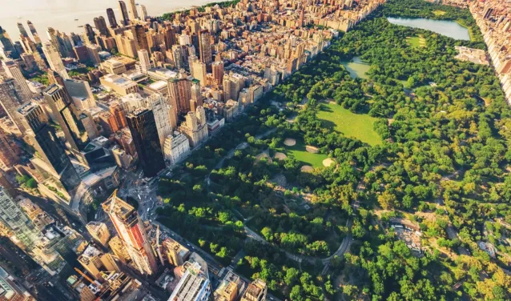Central Park
Which is also home to one of the most famous and lively squares in the world: Times Square. It has become known as the Crossroads of the world
, where approximately 365,000 people pass through each day.
Times Square
It also boasts the famous Broadway theatre district, where many people attempt to make a career, yet few succeed.
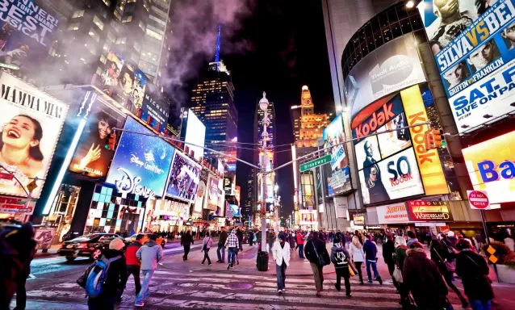Broadway Avenue
Manhattan the city that touches the skies.
Manhattan is home to world-famous skyscrapers such as,
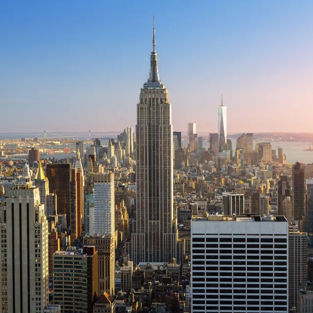The empire State Building
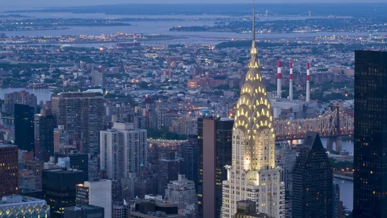The Chrysler Building
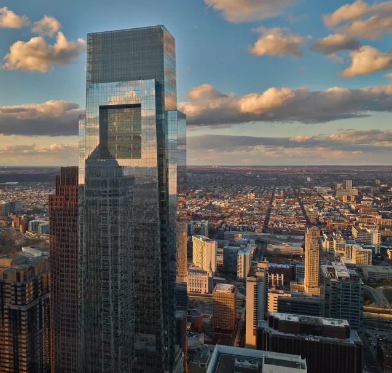The Comcast Building
and the more recent :
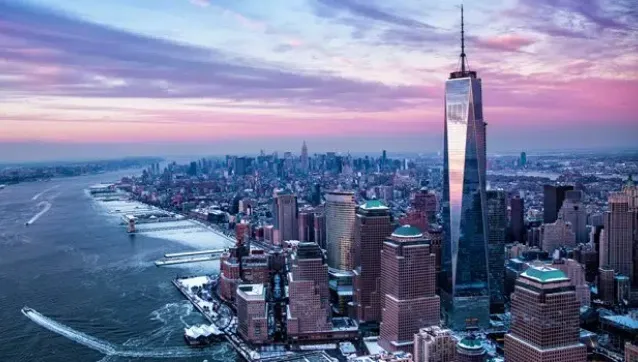The One World Trade Center
This recent tower was built following the attacks of 11 September 2001 and was nicknamed "Freedom Tower" , the same as the twin north tower of the World Trade Center.
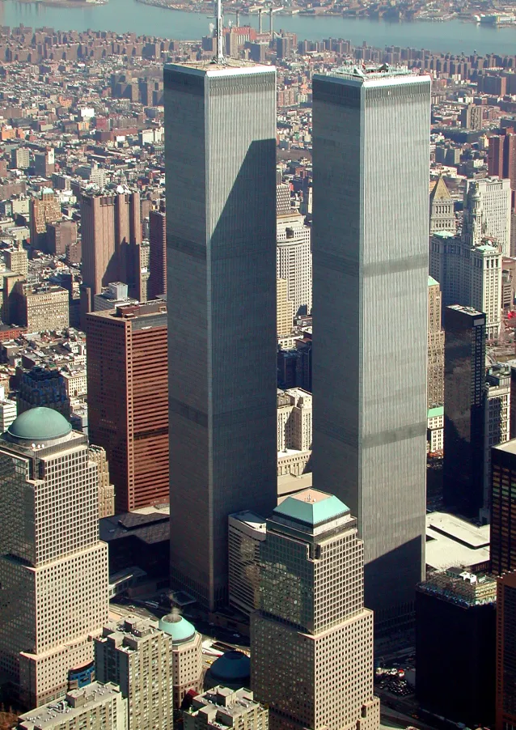The twin towers
Why I chose Manhattan.
I chose to talk to you about Manhattan thanks to its significant influence over pop culture. First of all, it's important to know that Gotham City, which is the city in which we follow all the Batman stories, is strongly inspired by Manhattan.
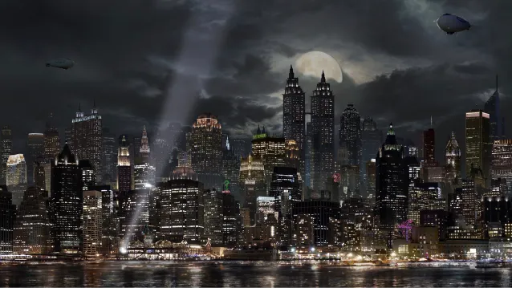For more information on Batman, click here.
Furthermore, the city is of central importance in the world-famous video game GTA IV
in which Manhattan acts as the setting for the game.
Liberty City
Yet another instance where the city is relevant can be seen in the 2005 film “King Kong” where Kong climbs the Empire State Building and is shot at by the military, a scene in the film that remains iconic to this day.
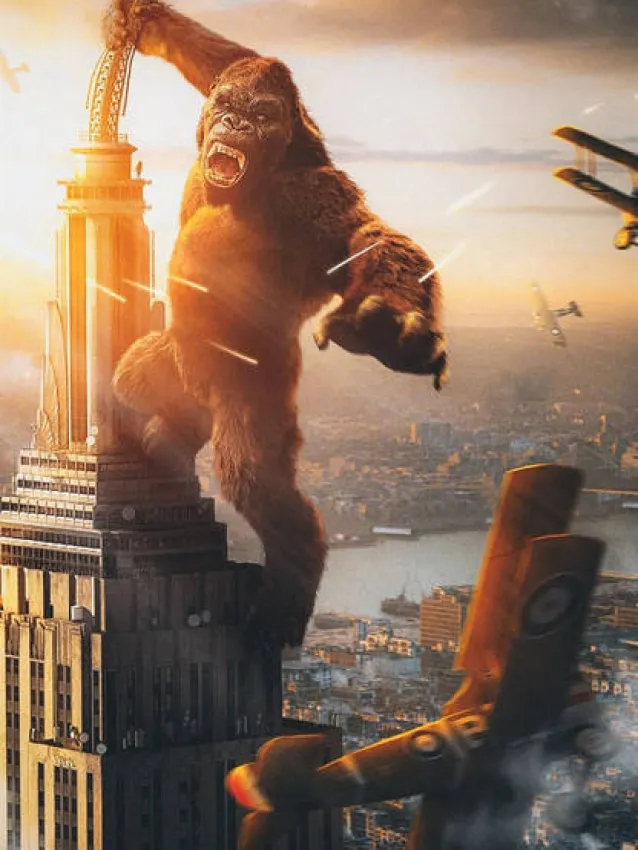Image of King Kong on top of the empire State Building
Evolution of the city
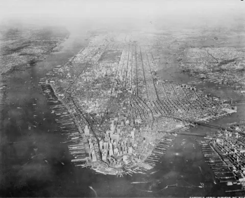Manhattan in 1936 photo entitled The connected city
Manhattan in 1950
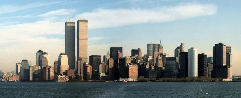Manhattan in 1972 at the end of the construction of the twin towers
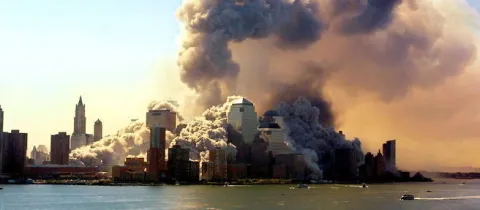Manhattan in 2001 during the terrorist attacks
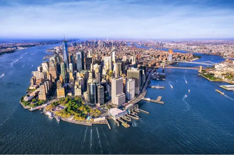Manhattan in 2022